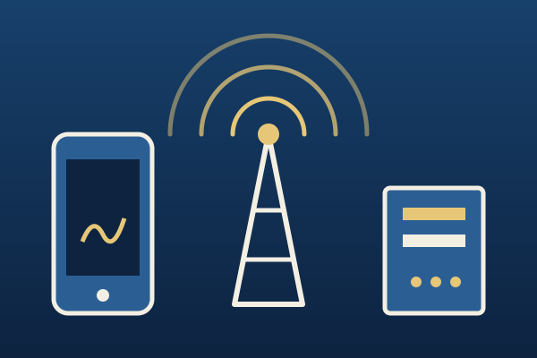
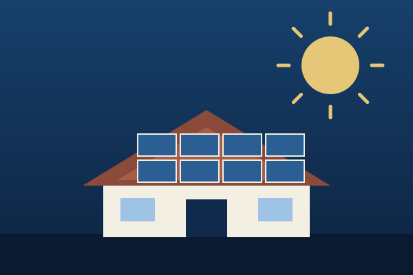
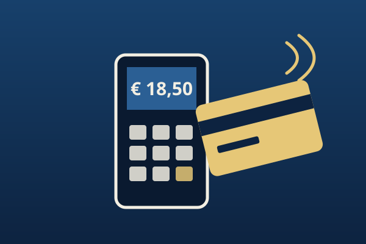

Telefonia e connettività
Valutiamo i progetti di telefonia per privati e aziende: linee fisse e mobili, fibra, centralini e connessioni per le sedi.
- Analisi di costi e consumi attuali
- Confronto tra le offerte degli operatori
- Assistenza in fase di attivazione o cambio gestore


Luce e gas
Per abitazioni, studi professionali e imprese. Partiamo da bollette e contratto in essere, poi confrontiamo le alternative disponibili.
- Lettura delle fatture e dei costi fissi
- Proposte di contratto per privati e per aziende
- Controllo periodico per accorgerti degli aumenti

Fotovoltaico
Se vuoi produrre parte dell’energia che consumi, ti presentiamo proposte di impianto a richiesta. Valutiamo consumi, spazi disponibili e tipo di utenza.
- Valutazione preliminare dei consumi
- Proposte per abitazioni e attività
- Il servizio parte solo se lo chiedi tu

Autonoleggio
Offerte di noleggio auto per privati, professionisti e aziende, a richiesta del cliente. Confrontiamo durata, chilometraggio e servizi inclusi.
- Noleggio a lungo e breve termine
- Confronto tra formule e servizi inclusi
- Proposte su misura per l’attività
Pagamenti elettronici
Per negozi, bar, studi e attività: soluzioni di incasso con terminali POS e pagamenti contactless.
- Confronto di commissioni e canoni
- Terminali fissi e portatili
- Assistenza all’attivazione
